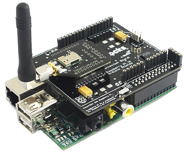

Знаем, че телефонните линии, които първоначално се използваха за предаване на глас, могат да предават и данни. По същия начин радиовълните - среда, която асоциираме предимно с радиопредавания - могат да се използват за предаване на сигнали, носещи данни. Използването на радиоканалите за връзка между устройствата, макар че не е ново като изобретение, едва напоследък еволюира значително, особено благодарение на широкото разпространение на Internet, локалните и WAN мрежи, свързващи много хора, позволяващи да си разменят глас, видео и данни помежду си, и то с осезаемо високи скорости. Тласък за развитието именно на безжичните устройства е дала необходимостта от по-голяма свобода и удобство при изграждането на мрежи, необходимостта от лесното включване на все по-бързо увеличаващия се брой на мобилни абонати, не желаещи да търсят специални точки за включване към мрежата, а глобално погледнато - потребността на съвременния човек от модерни бързодействащи и високоскоростни комуникации. Според изчисленията на аналитиците, през следващата година в света ще има над 1 милиард мобилни устройства, оборудвани с безжична връзка.
Комитетът по стандарти на организацията IEEE
(Institute of Electrical and Electronics Engineers), IEEE 802,
сформира през 1990 година работната група за изработването на
стандарт за безжични локални мрежи 802.11. Задачата на тази работна
група бе да разработи всеобщ стандарт за радиопредаване и за безжични
локални мрежи, които ще работят на честота 2.4 GHz със скорост на
предаване на данни 1 и 2 Mbps (Megabits-per-second). Работата
по създаването на стандарта бе завършена през 1997 година,
когато през юни месец бе ратифицирана първата официална спецификация
на 802.11. Стандартът IEEE 802.11 бе първият стандарт за
безжични мрежи (WLAN, Wireless Local Area Network), приет от
независима международна стандартизираща организация, разработила,
освен него, и множество други спецификации и стандарти за мрежовите връзки по кабел.
Стандартът към момента предлага няколко варианта: 802.11a, 802.11b, 802.11g, 802.11n+.

802.11а е
първото комерсиално предложение, което през 1999 г. привлича
вниманието на широката публика. Стандартно работи на честоти
около 5 GHz (5,15 до 5,8 GHz) и предлага максимална скорост
на свързване 54 Mbit/s, което за времето си е било една много
сериозна заявка. В случая достигането на близка до максималната
скорост на свързване е изисквало почти винаги наличие на пряка
видимост между устройствата. Това е създавало големи проблеми,
като при липса на видимост се е получавала сериозна загуба на производителност.
802.11b доведе до преодоляване на някои от недостатъците на
стандарта 802.11а и поради редица предимства и използването на
честотата 2,4 GHz, b версията се превърна в масово предпочитан
вариант въпреки доста по-ниската си максимална скорост от 11 Mbit/s.
Стандартът IEEE 802.11 определя дава режима на работа на безжичната мрежа - режим точка-точка (Ad-hoc) и режим клиент/сървър, наричан още режим на инфраструктурата (infrastructure mode). По този начин са озаглавени режимите във повечето програмни пакети, управляващи Access Point.
Първият режим, точка-точка, наричан още IBSS
- независим набор от услуги , представлява елементарна като структура мрежа,
в която отделните станции се свързват една със друга пряко, без да е необходима
точка за достъп. Разбира се, при това положение съществуват някои ограничения
от типа на максималния брой устройства, които могат да изграждат такава мрежа,
което зависи от типа на безжичното мрежово оборудване и от спецификациите на 802.11.
Режимът клиент/сървър
- предполага използването на поне една точка за достъп, представляваща специализирано
устройство, която да е включена към кабелна Ethernet мрежа, и определен, често ограничен,
брой крайни безжични работни станции. Този тип конфигурация се нарича основен набор
от услуги (BSS - Basic Service Set), като при наличието на два или повече BSS се формира
разширен набор от услуги (ESS - Extended Service Set). Очевидно е предимството на режима
клиент/сървър, когато безжичната мрежова станция може да получи достъп до локално мрежово
устройство или специфична функция, свързано към стационарната мрежа (например, към мрежов
принтер, скенер или Интернет).

Съвместимостта
между продуктите, произведени от различни производители, се
гарантира от независима организация, наречена Wireless Ethernet
Compatibility Alliance (WECA, http://www.weca.net), създадена
от лидерите в производството на мрежови устройства, между които
са Cisco , Lucent , 3Com , IBM , Intel, Apple, Compaq, Dell ,
Fujitsu , Siemens , Sony , AMD (над 80 компании), през същата 1999 година.
Технологията Bluetooth (на английски - син зъб) е наречена на
името на краля на Дания и Норвегия от края на 10-ти век Харалд Синия зъб, който
е известен с това, че успял да обедини воюващи дотогава племена от Дания
(включваща днес шведската област Скания, където е била създадена технологията Bluetooth),
и от Норвегия. По подобен начин Bluetooth е предназначен да „обедини”
(да направи съвместими) различни технологии, каквито са например тези
на компютрите и мобилните телефони. Този термин все по-често се среща
в материалите, посветени на компютрите. Става дума за технология, чрез
която се изграждат безжични мрежи, в които могат да участват не само
компютри, но и други устройства - например мобилни телефони.
Конструктивно, най-грубо погледнато,
Bluetooth-устройството представлява хардуерен модул (обособен или интегриран,
изпълняващ функциите на радиопредавател/приемник под управлението на драйвер.
Приемо-предавателят (ПП) според спецификациите трябва да работи в честотния
диапазон от 2400 - 2483,5 MHz, който е освободен в повечето държави и не
изисква лицензиране. Съществуват държави като Франция и Япония, в които
част от този диапазон се използва и за други цели, там диапазонът за тези
устройства е стеснен до 2445-2475 MHz (Испания), 2446,5-2483,5 (Франция).
Разстояние, на което
могат да се отдалечат две устройства Bluetooth към USB адаптерBluetooth,
е около 20-30 метра, но се работи по удължаването му. В замяна на това,
няколко Bluetooth устройства могат да се свържат в мрежа и през стена
(стени) или на няколко етажа в една сграда, без да има необходимост от
пряка видимост или външна антена.
Bluetooth има и друга, отличваща
го от останалите технологии особеност: различните Bluetooth
устройства влизат в контакт едно с друго автоматично, веднага
след като попаднат в обсега на ПП, а за установяването на
връзката, аутентификацията и др. се грижи програмното осигуряване.
Едно от големите предимства на
Bluetooth е, че устройството, поддържащо стандарта, влизайки в
обхват, може да установи връзка не с едно, а с множество други,
поддържащи тази технология, като не е задължително те да си взаимодействат активно.
